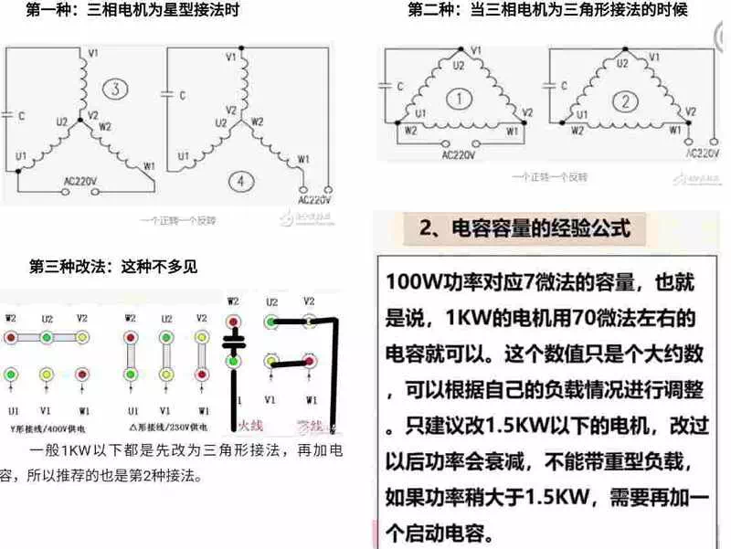

单相电动机有三个抽头，首先用万用表电阻挡测量三个线头之间的电阻值，电阻最大的两个线头之间并联电容，另一个线头（公共端）接电源的一端。然后用万用表的电阻挡测量公共端与接电容两端的线头之间的电阻，阻值稍小的一端接电源的另一端，即正转，若要求反转则改接到另一端?只有运行线圈和启动线圈截面积一样的单相可逆电机，才能正反转，否则反转不能带负荷。 一般运行绕组（主线圈）线径较粗一点，启动绕组（副线圈）线径较细，阻值小的主绕阻，阻值大的为副绕阻。单相电机用200欧档分别测主副绕组的电阻，然后加起来，看其是否与主副绕组串联的值相等，若不等此电机必坏。若相等再分别测主副绕组与外壳之间的绝缘电阻必须大于2兆，否则电机不良。 用来启动单相异步电动机的交流电解电容器或聚丙烯、聚酯电容器。单相电机流过的单相电流不能产生旋转磁场，需要采取电容用来分相，目的是使两个绕组中的电流产生近于90゜的相位差，以产生旋转磁场。 单相电机启动原理分：1、电阻启动式（电冰箱电机等）；2、电容启动式（木工电刨电机等）；3、电容运转式（洗衣机、电风扇等）；4、电容启动运转式。 电容启动式电机在电机启动后电容就断电了，断电原理是在电机轴上有一个离心开关，达到一定转速开关就断了，如果断不开启动线包就会烧毁；电容运转式电机电容在电机启动或正常运转时都在工作、如果电容容量变小将造成电机启动困难，风速降低
电容电压的选择
耐压公式：U（电容）大于或等于1.5*U；
如AC220V的电机，通常使用400V或450V的电容器。电容容量的选择
单相运行电容公式：C＝1950×I/U×cosφ（用一个电容，既是启动电容又是运行电容，电风扇、洗衣机等小容量电动机常用） 启动电容器容量公式 ：C=3500*I/U*cosφ（用一个电容只是启动时投入，正常运行时断开，用转换开关或离心开关切换。 双值电容运转电容容量公式 ：C=1200*I/U*cosφ（用2个电容，一个负责运行，一个负责启动）双值电容起动电容容量公式 ：C=（2～3）*C（运转电容） C：电容容量：I：电机额定电流，U：电动机额定电压，cosφ：功率因数0.7。一般不用计算，按每100W配运行电容2～3μF，起动电容是运行电容的2～3倍。 电动机的电容选择对电压要求严格，一定要等于或大于于电动机额定电压的1.5倍以上。额定电压220V电源的，电容额定电压不能低于400V。电容值有一定的宽泛性，大点小点都没有关系，特别是启动电容，可以在工作电容的2-6倍选取。 电容量也不能太大，虽然电容量大一点能让电机转速提高，扭矩增大，但如果选择太大的电容会造成电机电流过大，发热严重从而烧毁电机。比如原来４UF的电容可以加大到５UF，但不能加大到１０UF，原则是不能超过额定电容的２０%。数字万用表测试电容好坏
1、判断极性，先把万用表调到100或1K欧姆档，假定一极为正极，让黑表笔与它连接，红表笔与另一极连接，记下阻值，然后把电容放电，即让两极接触，然后换表笔测电阻，阻值大的一次黑表笔连接的就是电容的正极。 2、把万用表调到欧姆档适当档位，档位选择的原则是：1μF的电容用20K档，1－100μF电容用2K档，大于100,μF的用200档。 3、然后用万用表的红笔接电容的正极，黑笔接电容的负极，如果显示从0慢慢增加，最后显示溢出符号1则电容正常，如果始终显示为0，则电容内部短路，如果始终显示1， 则电容内部断路。
用万用表的高阻档如X10K或X1K档，测电容的漏电阻值。电阻越大，漏电越小。电解电容测其正向漏电，黑表笔接电容的正极。 电容器的测量好坏要用机械表才能判断准确。三相改单相运行
100W功率对应7微法的容量，也就 是说．1KW的电机用70微法左右的 电窖就可以。这个数值只是个大约数 ．可以根据自己的负载情况进行调整 。只建议改1.5KW以下的电机，改过 以后功率会衰减，不能带重型负载， 如果功率稍大于1.5KW．需要再加一 个启动电容